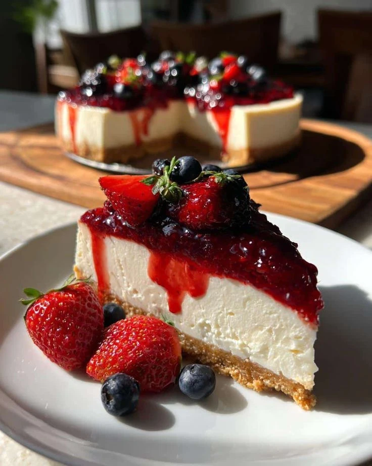

← Назад к рецептам

Классический Чизкейк с ягодами
Ингредиенты:
- Песочное печенье — 300г
- Творожный сыр — 600г
- Сливки — 150мл
- Ягодный конфитюр — 150г
Приготовление:
1. Сформируйте основу из крошки печенья и масла.
2. Залейте сырной массой и выпекайте на водяной бане.
3. Охладите и украсьте ягодами и конфитюром.